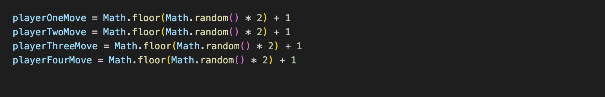

What is an analogy to describe JavaScript and its relationship to HTML and CSS?
You could compare the three languages to a Marionette puppet show. The HTML is the structure that forms the set, and the characters inside it, the CSS paints the scene with color and costumes, and Javascript is the puppeteer that is pulling the strings and bringing the set to life.
Explain control flow and loops using an example process from everyday life:
Control flow in programming refers to the order or flow that a computer reads code. A loop is a break in this flow that will keep running until a particular condition is satisfied. Once this condition is met, the control flow will continue.
An example of this would be cooking pasta for dinner. We can follow the control flow of a recipe, and we might be required to loop through some steps. A very simplified example of this can be seen below:
Tomato Pasta (feeds 4)
- Chop onions
- Chop garlic
- Chop Fry onions and garlic in oil
- Add cans of tomatoes - This is an example of a loop, repeat this step until the condition that two cans have been added is met.
- Add pasta to boiling water
- Once pasta is al dente, add to sauce - This is an example of a conditional statement. We are saying IF the pasta is al dente, add to sauce. Otherwise (ELSE) do nothing and wait.
- Serve - This is another loop example, serve pasta into 4 bowls until no pasta remains
Describe what the DOM is and an example of how you might interact with it.
The Document Object Model, or the DOM, represents all the elements in an HTML document in a sort of family tree-like structure. We have parent elements, and child elements which are all linked in various ways throughout the document. The power of the DOM comes from its ability to be accessed and manipulated by programming languages such as Javascript. The family tree analogy doesn’t quite work here, but if we wanted to stick with it we could change the name of a parent (element), or the hair color of a child (element). Through this manipulation we can evolve a website from a static page into something fun and interactive. See a couple examples of this below:
Changing background color:
Here we can maniputlate the CSS by changing the background colour when a user clicks the button:
See the Pen DOM Tutorial #1 by Eamonn O'Sullivan (@Monnyosullivan) on CodePen.
Form Validation:
Form validation is a great use of DOM manipulation. We can use visual cues to let a user know when they have met any required conditions. See this in action by typing a username below:
See the Pen Form Validation #1 by Eamonn O'Sullivan (@Monnyosullivan) on CodePen.
Explain the difference between accessing data from arrays and objects.
Arrays and objects are two ways we can store data in Javascript, and they come with their differences. An array is a collection of items (data), and each different item has an index (which starts at 0). We can use this index to access different items from the array. An example of an array can be seen below:

An object is similar to an array in that it stores data, however an object has what we call a key value pair. We could look at a car as an object, with keys being the make, model, and color of the car. The values would then be Toyota, Corolla, and red. We can access this information using the keys, which you can see in the below example:

Explain what functions are and why they are helpful.
Simply put, a function is a piece of code that performs a task when called upon. Functions are helpful as they let us break our code down into smaller chunks which are easier to work with and maintain. We are also likely to use a function multiple times on a website, so rather than writing the code out each time, we can just call the function again by using the functions name.
An example of this could be a 4 player game that generates a random number between 1 - 2 to represent a coin flip. All 4 players require the use of this coin flip function, so instead of writing the function out 4 sepereate times for each player, we can write the function once, and call it on each players turn. Down the track we might decide that instead of a coin flip, we want to use a dice. So instead of updating the function 4 times for each player, we can just update the single function so that the random number generated is now between 1 - 6.
An example of this can be seen below. The syntax will look confusing for someone without any prior knowledge, however the function below utilises some built in math functions to generate a random number. We can then call this function for each player to represent their turn.
The other alternative would be to write the function out four times for each player.
Now if we want to change our function to represent a dice (random number between 1 - 6), we would be faced with the following options depending on how we set up our code. If we set up our code like the first example, we only have to update the function once. If we set up our code like the second example, we would have to update the code four times for each player. See the updated code below:
This update is admittedly very small in context, however most web applications will have far more complicated functions, and far more complicated updates, so the theory behind this practice is sound.